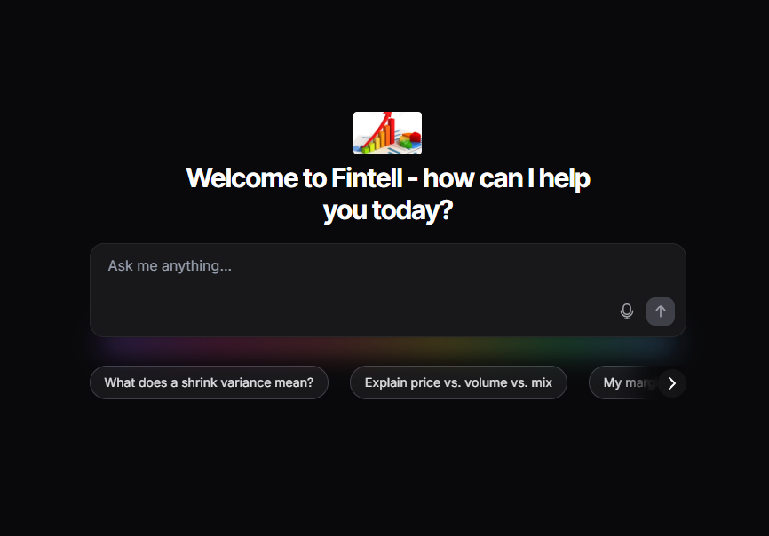
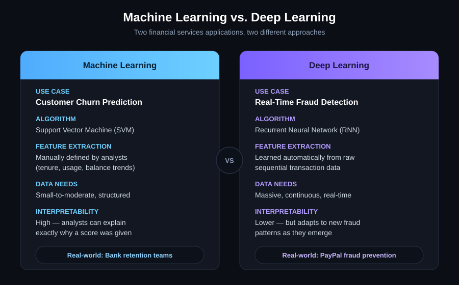

Portfolio Artifacts
Work demonstrating applied AI/ML skills grounded in real financial domain expertise.
Artifact 1: Fintell - An AI Variance Investigation Assistant

Introduction
As part of my AI/ML coursework, I designed and built Fintell, an AI assistant that helps financial analysts and business stakeholders systematically diagnose why a financial metric moved, grounded in my professional background in financial reporting and analysis.
Description
Fintell is a conversational AI tool that guides a user through a structured, multi-step diagnostic process to identify the likely root cause of a financial variance, such as a margin decline. Rather than answering with a single response, it asks targeted follow-up questions in sequence, narrows down whether a change is price, volume, or mix-driven, and whether it's a one-time event or a recurring trend. The same way an experienced financial analyst would approach a real investigation.
Objective
To apply generative AI tools and design thinking methodology to a real problem in financial analysis: helping someone move from "something looks off" to a clear, actionable hypothesis about what's driving a metric change.
Process
I used the design thinking framework (empathy, define, ideate, prototype, test) to plan Fintell's objective, scope, and behavioral rules before building anything. I wrote a system prompt enforcing sequential reasoning: asking one diagnostic question at a time and building toward a conclusion, rather than presenting an entire framework at once. I tested it extensively, including with unplanned follow-up questions and a deliberately vague, ambiguous opener, to confirm it reasoned correctly and asked for clarification rather than guessing. I also designed and branded the interface, including a custom name, greeting, and guided suggestion prompts, to give it a professional, product-like feel.
Tools and Technologies Used
Chatbase (AI agent builder), GPT-5.4 Mini, prompt engineering, design thinking methodology.
Value Proposition
This project demonstrates my ability to translate real financial domain expertise into a practical, well-scoped AI tool and going beyond just using AI to designing how it should reason, what it should and shouldn't do, and how to test it rigorously. Naming and branding it as a standalone product reflects how I think about turning analytical processes into usable tools, not just one-off exercises.
Unique Value
Unlike a simple Q&A chatbot, Fintell uses sequential, branching reasoning to mimic a real analytical investigation — and during testing, it generated sharper, more specific follow-up questions than what I had explicitly scripted, showing it could reason within a framework rather than just follow a rigid script.
Relevance
Directly relevant to FP&A, financial systems, and business analytics roles, where structured root-cause thinking is a core, transferable skill and where the ability to combine financial judgment with practical AI tooling is an increasingly valued differentiator.
References
Try Fintell — Live Agent
Artifact 2: ML vs. Deep Learning Case Study Report

Introduction
As part of my AI/ML coursework, I authored a comparative case study analyzing when to apply traditional machine learning versus deep learning, grounded in two real-world financial services applications.
Description
This report examines two AI/ML use cases within financial services: customer churn prediction, solved using a Support Vector Machine, and real-time payment fraud detection, solved using a Recurrent Neural Network. For each, I explain why the chosen approach fits the problem's data structure and constraints, and why the opposite approach would underperform or be inefficient, supported by academic and industry sources.
Objective
To demonstrate the ability to critically evaluate AI/ML techniques against real business problems, a core skill for translating between technical teams and financial/business stakeholders who need to know not just "can we use AI here," but "which approach actually fits this problem."
Process
I selected two structurally different problems within a single industry to make the comparison concrete rather than abstract. For churn prediction, I researched how banks use structured account data (tenure, usage, balance trends) with interpretable models. For fraud detection, I researched how PayPal applies RNNs to model sequential transaction behavior in real time. I supported each analysis with an academic citation and an industry source, then structured the report as a professional business document with clear headings and a defined argument in each section.

Tools and Technologies Used
Research and technical analysis, APA-style academic citation, applied understanding of ML algorithms (SVM, Logistic Regression, Decision Trees) and DL architectures (RNN, CNN, Transformer models), professional business report writing, and Gemini 3.5 for infographic workflow diagram.
Value Proposition
This artifact shows I can translate technical AI/ML concepts into clear, business-relevant reasoning, reasoning about tradeoffs like interpretability, data requirements, and adaptability, not just algorithm mechanics. That's the kind of analytical judgment needed in FP&A, BI Analyst, or Business Analyst roles evaluating which AI solution actually fits a given business problem.
Unique Value
Rather than treating ML and DL as interchangeable buzzwords, this report makes the case for each technique on its own terms, tying algorithm choice directly to data structure, interpretability needs, and how quickly a problem's patterns evolve over time.
Relevance
Directly relevant to finance and analytics roles where leadership needs a clear-eyed recommendation on AI approach, not just enthusiasm for AI in general, and where explaining technical tradeoffs to non-technical stakeholders is a daily skill.
References
View Full Report (PDF)